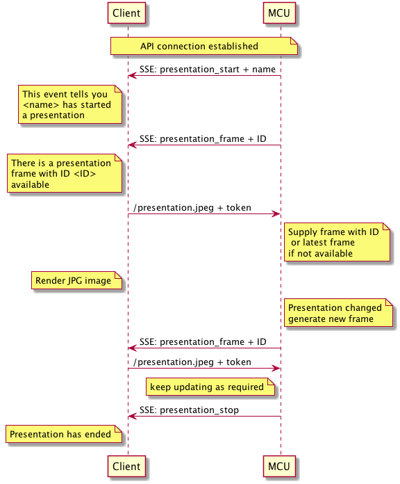
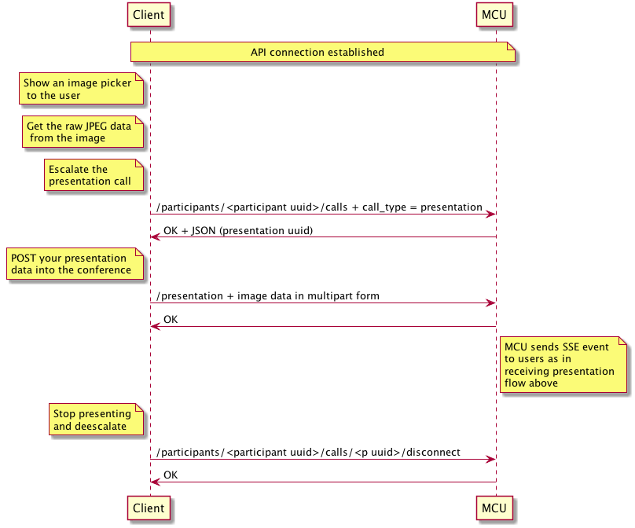

Presentations
There are two methods for sending / receiving presentations. The
first is to respond to a presentation_started and
presentation_frame event by requesting a presentation.jpg from the
MCU and displaying it to the user and every time you get a new
presentation frame event, requesting a new presentation.jpg. The
second is to establish a presentation call and the MCU will send you a
media stream (often referred to as an HD presentation) that you can
render. For mobile clients, rendering two simultaneous video streams
is a lot of work and is not recommended so only the image based
presentation is shown here but there is documentation for the REST
calls required if you wish to do this.
Receiving a presentation
This example flow shows the reception of a presentation using images from the MCU. See presentation start docs for more information

Sending a presentation
This example flow shows the flow for presenting images from a client device into the conference.
